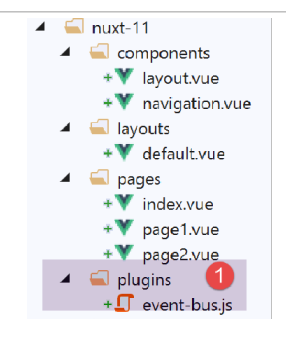
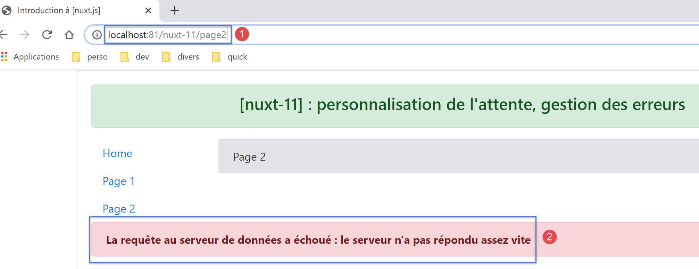
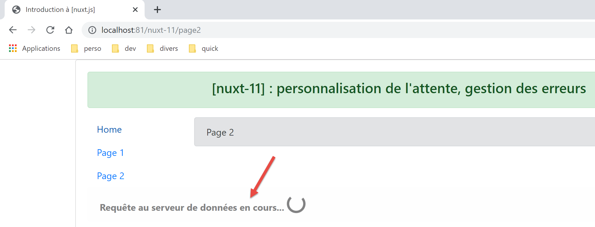

14. مثال [nuxt-11]: تخصيص صورة الانتظار
بشكل افتراضي، صورة الانتظار لـ [nuxt] هي شريط تقدم. يوضح المثال [nuxt-11] أنه يمكن استبدالها بصورة انتظار خاصة:

يوضح المثال [nuxt-11] أيضًا كيفية التعامل مع أخطاء التحميل.

يتم الحصول على المثال [nuxt-11] في البداية عن طريق نسخ المثال [nuxt-10]:

سنضيف في [1] مكونًا إضافيًا للعميل سيكون دوره إدارة الأحداث بين المكونات.
14.1. المكوّن الإضافي [event-bus]
سيتم تنفيذ المكون الإضافي [event-bus] من قبل العميل والخادم، ولكننا سنرى أنه لا يعمل على جانب الخادم. كوده هو كما يلي:
// يتم إنشاء ناقل أحداث بين العروض
import Vue from 'vue'
export default (context, inject) => {
// ناقل الأحداث
const eventBus = new Vue()
// إدخال دالة [eventBus] في السياق
inject('eventBus', () => eventBus)
}
- السطر 5: ناقل الأحداث هو مثيل لفئة [Vue]. في الواقع، تحتوي هذه الفئة على طرق لإدارة الأحداث:
- [$emit]: لإصدار حدث؛
- [$on]: للاستماع إلى حدث معين؛
لن يدير ناقل الأحداث هذا سوى حدث واحد، [loading]، والذي ستستخدمه الصفحات لبدء/إيقاف الرسوم المتحركة لانتظار انتهاء وظيفة غير متزامنة؛
- السطر 7: يتم إنشاء دالة [$eventBus] (الحجة الأولى) التي ستكون مهمتها إرجاع الكائن [eventBus] الذي تم إنشاؤه للتو (الحجة الثانية). يتم إدخال هذه الوظيفة في السياق لتكون متاحة في الكائنات [context.app] و [this] للصفحات؛
14.2. التخطيط [default.vue]
يتطور تخطيط [default.vue] على النحو التالي:
<template>
<div class="container">
<b-card>
<!-- رسالة -->
<b-alert show variant="success" align="center">
<h4>[nuxt-11] : personnalisation de l'attente, gestion des erreurs</h4>
</b-alert>
<!-- عرض التوجيه الحالي -->
<nuxt />
<!-- جاري التحميل -->
<b-alert v-if="showLoading" show variant="light">
<strong>Requête au serveur de données en cours...</strong>
<div class="spinner-border ml-auto" role="status" aria-hidden="true"></div>
</b-alert>
<!-- خطأ في التحميل -->
<b-alert v-if="showErrorLoading" show variant="danger">
<strong>La requête au serveur de données a échoué : {{ errorLoadingMessage }}</strong>
</b-alert>
</b-card>
</div>
</template>
<script>
/* eslint-disable no-console */
export default {
name: 'App',
data() {
return {
showLoading: false,
showErrorLoading: false
}
},
// دورة الحياة
beforeCreate() {
console.log('[default beforeCreate]')
},
created() {
console.log('[default created]')
// نستمع إلى الحدث [loading]
this.$eventBus().$on('loading', this.mShowLoading)
// وكذلك الحدث [errorLoadingMessage]
this.$eventBus().$on('errorLoading', this.mShowErrorLoading)
},
beforeMount() {
console.log('[default beforeMount]')
},
mounted() {
console.log('[default mounted]')
},
methods: {
// إدارة التحميل
mShowLoading(value) {
console.log('[default mShowLoading], showLoading=', value)
this.showLoading = value
},
// خطأ في التحميل
mShowErrorLoading(value, errorLoadingMessage) {
console.log('[default mShowErrorLoading], showErrorLoading=', value, 'errorLoadingMessage=', errorLoadingMessage)
this.showErrorLoading = value
this.errorLoadingMessage = errorLoadingMessage
}
}
}
</script>
- الأسطر 11-14: الرسوم المتحركة للانتظار. لا يتم عرضها إلا إذا كانت الخاصية [showLoading] صحيحة (السطر 29)؛
- الأسطر 16-18: رسالة خطأ التحميل. لا يتم عرضها إلا إذا كانت الخاصية [showErrorLoading] (السطر 30) صحيحة؛
- السطور 29-30: عند التحميل الأولي للمكون، يتم إخفاء الرسوم المتحركة للانتظار وكذلك رسالة الخطأ؛
- الأسطر 37-43: عند إنشائها، تستمع الصفحة إلى الحدث [loading] (الحجة الأولى) على ناقل الأحداث الذي أنشأه المكون الإضافي. عند استلامه، تقوم بتنفيذ الطريقة [mShowLoading] في الأسطر 52-55 (الحجة الثانية)؛
- الأسطر 52-55: ستكون القيمة التي تستقبلها الطريقة [mShowLoading] قيمة منطقية true / false. وهي تُستخدم لإظهار / إخفاء رسالة الانتظار؛
- السطران 41-42: عند إنشائها، تستمع الصفحة إلى الحدث [errorLoading] (الحجة الأولى) على ناقل الأحداث الذي أنشأه المكون الإضافي. وعند استلامه، تقوم بتنفيذ الطريقة [mShowErrorLoading] الواردة في الأسطر 57-61 (الحجة الثانية)؛
- السطر 57: تتلقى الطريقة [mShowErrorLoading] حجتين:
- الحجة الأولى هي قيمة منطقية (true/false) لإظهار/إخفاء رسالة الخطأ؛
- المعلمة الثانية لا تظهر إلا في حالة وجود خطأ. وهي تمثل رسالة الخطأ المراد عرضها؛
- ستُظهر لنا سجلات الأسطر 53 و58 أن الطريقتين [showLoading] و[showErrorLoading] لم يتم تنفيذهما على جانب الخادم؛
14.3. الصفحة [page1]
يتطور كود الصفحة [page1] على النحو التالي:
<!-- العرض رقم 1 -->
<template>
<Layout :left="true" :right="true">
<!-- التنقل -->
<Navigation slot="left" />
<!-- رسالة-->
<b-alert slot="right" show variant="primary"> Page 1 -- result={{ result }} </b-alert>
</Layout>
</template>
<script>
/* eslint-disable no-console */
/* eslint-disable nuxt/no-timing-in-fetch-data */
import Navigation from '@/components/navigation'
import Layout from '@/components/layout'
export default {
name: 'Page1',
// المكونات المستخدمة
components: {
Layout,
Navigation
},
// بيانات غير متزامنة
asyncData(context) {
// سجل
console.log('[page1 asyncData started]')
// بدء الانتظار
context.app.$eventBus().$emit('loading', true)
// لا توجد أخطاء
context.app.$eventBus().$emit('errorLoading', false)
// تقديم وعد
return new Promise(function(resolve, reject) {
// محاكاة وظيفة غير متزامنة
setTimeout(function() {
// نهاية الانتظار
context.app.$eventBus().$emit('loading', false)
// سجل
console.log('[page1 asyncData finished]')
// نقوم بإرجاع النتيجة غير المتزامنة - رقم عشوائي هنا
resolve({ result: Math.floor(Math.random() * Math.floor(100)) })
}, 5000)
})
},
// دورة الحياة
beforeCreate() {
console.log('[page1 beforeCreate]')
},
created() {
console.log('[page1 created]')
},
beforeMount() {
console.log('[page1 beforeMount]')
},
mounted() {
console.log('[page1 mounted]')
}
}
</script>
- تتم التعديلات في الدالة [asyncData] في الأسطر 26-47؛
- السطران 29-30: قبل بدء الدالة غير المتزامنة، يتم إرسال الحدث [loading] إلى الصفحات الأخرى في التطبيق. تجدر الإشارة إلى أنه في [asyncData]، لا يمكن الوصول إلى الكائن [this] الذي لم يتم إنشاؤه بعد. لذلك، يتم استخدام السياق الذي تتلقاه الدالة [asyncData] كحجة (السطر 26)؛
- السطر 30: يتم استخدام ناقل الأحداث للإشارة إلى أن التحميل على وشك البدء؛
- السطر 38: يتم استخدام ناقل الأحداث للإشارة إلى انتهاء التحميل؛
ملاحظة: عند التنفيذ، عندما يتم طلب الصفحة [page1] من الخادم، لا تظهر صورة الانتظار. في السجلات، نرى أن الطريقة [default.mShowLoading] لم يتم استدعاؤها من جانب الخادم. على أي حال، لا معنى لرؤية صورة الانتظار عند طلب الصفحة من الخادم. لا يرسل الخادم الصفحة إلى متصفح العميل إلا بعد انتهاء وظيفة [asyncData]. وبالتالي، تصبح صورة الانتظار عديمة الفائدة. وينطبق هذا على جميع صفحات التطبيق التي يتم طلبها مباشرة من الخادم.
14.4. الصفحة [index]
رمز الصفحة [index] هو التالي:
<!-- الصفحة الرئيسية -->
<template>
<Layout :left="true" :right="true">
<!-- التنقل -->
<Navigation slot="left" />
<!-- رسالة-->
<b-alert slot="right" show variant="warning">
Home
</b-alert>
</Layout>
</template>
<script>
/* eslint-disable no-undef */
/* eslint-disable no-console */
/* eslint-disable nuxt/no-env-in-hooks */
/* eslint-disable nuxt/no-timing-in-fetch-data */
import Navigation from '@/components/navigation'
import Layout from '@/components/layout'
export default {
name: 'Home',
// المكونات المستخدمة
components: {
Layout,
Navigation
},
// بيانات غير متزامنة
asyncData(context) {
// سجل
console.log('[page1 asyncData started]')
// بدء الانتظار
context.app.$eventBus().$emit('loading', true)
// لا توجد أخطاء
context.app.$eventBus().$emit('errorLoading', false)
// تقديم وعد
return new Promise(function(resolve, reject) {
// محاكاة وظيفة غير متزامنة
setTimeout(function() {
// نهاية الانتظار
context.app.$eventBus().$emit('loading', false)
// سجل
console.log('[page1 asyncData finished]')
// إرجاع خطأ
reject(new Error("le serveur n'a pas répondu assez vite"))
}, 5000)
}).catch((e) => context.error({ statusCode: 500, message: e.message }))
},
// دورة الحياة
beforeCreate() {
console.log('[home beforeCreate]')
},
created() {
console.log('[home created]')
},
beforeMount() {
console.log('[home beforeMount]')
},
mounted() {
console.log('[home mounted]')
// لا يوجد خطأ
this.$eventBus().$emit('errorLoading', false)
}
}
</script>
- الأسطر 30-49: تتطابق وظيفة [asyncData] مع تلك الموجودة في الصفحة [page1] باستثناء تفصيل واحد: في السطر 46، يتم إنهاء الوظيفة غير المتزامنة عند الفشل (باستخدام الطريقة [reject])؛
- السطر 46: معلمة الدالة [reject] هي مثيل لفئة [Error]. معلمة منشئ [Error] هي رسالة الخطأ؛
- السطر 48: يتم اعتراض هذا الخطأ بواسطة الطريقة [catch] التابعة لـ [Promise] التي تتلقى الخطأ كمعلمة. ثم يتم استخدام الدالة [context.error] للإبلاغ عن الخطأ. معلمة الدالة [context.error] هي كائن له هنا خاصيتان:
- [statusCode]: رمز خطأ HTTP؛
- [message]: رسالة خطأ؛
سواء تم تنفيذ [asyncData] بواسطة العميل أو الخادم، في حالة حدوث خطأ [context.error]، تعرض [nuxt] الصفحة [layouts / error.vue]:

على الرغم من أنها صفحة، يتم البحث عن الصفحة [error.vue] في المجلد [layouts] (ربما لتجنب تضمينها في مسارات التطبيق؟). هنا، الصفحة [error.vue] هي التالية:
<!-- تعريف HTML للعرض -->
<template>
<!-- تنسيق الصفحة -->
<Layout :left="true" :right="true">
<!-- تنبيه في العمود الأيمن -->
<template slot="right">
<!-- رسالة على خلفية صفراء -->
<b-alert show variant="danger" align="center">
<h4>L'erreur suivante s'est produite : {{ JSON.stringify(error) }}</h4>
</b-alert>
</template>
<!-- قائمة التنقل في العمود الأيسر -->
<Navigation slot="left" />
</Layout>
</template>
<script>
/* eslint-disable no-undef */
/* eslint-disable no-console */
/* eslint-disable nuxt/no-env-in-hooks */
import Layout from '@/components/layout'
import Navigation from '@/components/navigation'
export default {
name: 'Error',
// المكونات المستخدمة
components: {
Layout,
Navigation
},
// خاصية [props]
props: { error: { type: Object, default: () => 'waiting ...' } },
// دورة الحياة
beforeCreate() {
// العميل والخادم
console.log('[error beforeCreate]')
},
created() {
// العميل والخادم
console.log('[error created, error=]', this.error)
},
beforeMount() {
// العميل فقط
console.log('[error beforeMount]')
},
mounted() {
// العميل فقط
console.log('[error mounted]')
}
}
</script>
عندما تعرض [nuxt] الصفحة [error.vue]، فإنها تنقل إليها الخاصية [props]، وهي الخطأ الذي حدث (السطر 33). إذا كان الخطأ ناتجًا عن [context.error(objet1)]، فستكون قيمة الخاصية [props] للصفحة [error.vue] هي [objet1]. تشير الوثائق الخاصة بـ [nuxt] إلى أن [objet1] يجب أن تحتوي على الأقل على سمات [statusCode, message]. يعرض السطر 9 السلسلة jSON للكائن [objet1] المستلم.
14.5. الصفحة [page2]
تُظهر الصفحة [page2] طريقة أخرى للتعامل مع الخطأ:
- في [page1]، يتم عرض الخطأ في صفحة منفصلة [error.vue]؛
- في [page2]، سيتم عرض الخطأ في الصفحة [page2] التي تسببت في الخطأ؛
رمز [page2] هو التالي:
<!-- المنظر رقم 2 -->
<template>
<Layout :left="true" :right="true">
<!-- التنقل -->
<Navigation slot="left" />
<!-- رسالة -->
<b-alert slot="right" show variant="secondary">
Page 2
</b-alert>
</Layout>
</template>
<script>
/* eslint-disable no-console */
/* eslint-disable nuxt/no-timing-in-fetch-data */
import Navigation from '@/components/navigation'
import Layout from '@/components/layout'
export default {
name: 'Page2',
// المكونات المستخدمة
components: {
Layout,
Navigation
},
// بيانات غير متزامنة
asyncData(context) {
// سجل
console.log('[page2 asyncData started]')
// بدء الانتظار
context.app.$eventBus().$emit('loading', true)
// لا توجد أخطاء
context.app.$eventBus().$emit('errorLoading', false)
// يتم تقديم وعد
return new Promise(function(resolve, reject) {
// محاكاة وظيفة غير متزامنة
setTimeout(function() {
// نهاية الانتظار
context.app.$eventBus().$emit('loading', false)
// يتم إنشاء خطأ بشكل عشوائي
const errorLoadingMessage = "le serveur n'a pas répondu assez vite"
// نهاية بنجاح
resolve({ showErrorLoading: true, errorLoadingMessage })
// سجل
console.log('[page2 asyncData finished]')
}, 5000)
})
},
// دورة الحياة
beforeCreate() {
console.log('[page2 beforeCreate]')
},
created() {
console.log('[page2 created]')
},
beforeMount() {
console.log('[page2 beforeMount]')
},
mounted() {
console.log('[page2 mounted]')
// العميل
if (this.showErrorLoading) {
console.log('[page2 mounted, showErrorLoading=true]')
this.$eventBus().$emit('errorLoading', true, this.errorLoadingMessage)
}
}
}
</script>
مرة أخرى، ندرج دالة [asyncData] في كود الصفحة، ومثل [index]، ستولد [page2] خطأً سنعالجه هذه المرة بطريقة مختلفة.
- السطر 44: يقوم كل من الخادم والعميل بإنهاء الوعد بنجاح من خلال إرجاع النتيجة [{ showErrorLoading: true, errorLoadingMessage }]. نعلم أن هذا سيؤدي إلى تضمين الخصائص [showerrorLoading, errorLoadingMessage] في الخصائص [data] للصفحة وأن العميل سيتلقى هذه الخصائص؛
- الأسطر 60-67: من المعروف أن الدالة [mounted] لا يتم تنفيذها إلا من قبل العميل؛
- السطر 63: يقوم العميل باختبار ما إذا كانت الخاصية [showErrorLoading] قد تم تعيينها (من قبل الخادم أو العميل حسب الحالة). إذا كان الأمر كذلك، فإنه يرسل الحدث [‘errorLoading’] (السطر 65) حتى تعرض الصفحة [default] رسالة الخطأ [this.errorLoadingMessage]. في النهاية، يرسل الخادم صفحة دون عرض رسالة خطأ. يتم عرض هذه الرسالة في اللحظة الأخيرة من قبل العميل عندما يتم "تحميل" الصفحة؛
14.6. Exécution
14.6.1. [nuxt.config]
ملف التنفيذ [nuxt.config.js] هو التالي:
export default {
mode: 'universal',
/*
** Headers of the page
*/
head: {
title: 'Introduction à [nuxt.js]',
meta: [
{ charset: 'utf-8' },
{ name: 'viewport', content: 'width=device-width, initial-scale=1' },
{
hid: 'description',
name: 'description',
content: 'ssr routing loading asyncdata middleware plugins store'
}
],
link: [{ rel: 'icon', type: 'image/x-icon', href: '/favicon.ico' }]
},
/*
** Customize the progress-bar color
*/
loading: false,
/*
** Global CSS
*/
css: [],
/*
** Plugins to load before mounting the App
*/
plugins: [{ src: '@/plugins/event-bus' }],
/*
** Nuxt.js dev-modules
*/
buildModules: [
// الوثيقة: https://github.com/nuxt-community/eslint-module
'@nuxtjs/eslint-module'
],
/*
** Nuxt.js modules
*/
modules: [
// الوثيقة: https://bootstrap-vue.js.org
'bootstrap-vue/nuxt'،
// الوثيقة: https://axios.nuxtjs.org/usage
'@nuxtjs/axios'
],
/*
** Axios module configuration
** See https://axios.nuxtjs.org/options
*/
axios: {},
/*
** Build configuration
*/
build: {
/*
** You can extend webpack config here
*/
extend(config, ctx) {}
},
// مجلد شفرة المصدر
srcDir: 'nuxt-11',
// الموجه
router: {
// جذر التطبيق URL
base: '/nuxt-11/'
},
// خادم
server: {
// منفذ الخدمة، 3000 افتراضيًا
port: 81,
// عناوين الشبكة المستمعة، localhost افتراضيًا: 127.0.0.1
// 0.0.0.0 = جميع عناوين الشبكة الخاصة بالجهاز
host: 'localhost'
}
}
- السطر 22: نضع الخاصية [loading] على [false] حتى لا يستخدم [nuxt] صورته الافتراضية للانتظار؛
- السطر 31: المكون الإضافي الذي يحدد ناقل الأحداث؛
14.6.2. صفحة La التي تم تنفيذها بواسطة الخادم
نطلب الصفحة [index] من الخادم (نكتب URL [http://localhost:81/nuxt-11/] يدويًا). الصفحة المعروضة بواسطة متصفح العميل هي التالية:

السجلات هي كما يلي:

- في [3]، نرى أن الخادم يرسل الصفحة [error.vue]؛
- في [4]، نرى أن العميل يعرض أيضًا الصفحة [error] مع نفس الخطأ الذي يواجهه الخادم؛
- يمكن ملاحظة أن الطريقة [mShowLoading] للصفحة [default] لم يتم استدعاؤها من جانب الخادم على الرغم من أن الصفحة [index] قد قامت بتنشيط حالة انتظار. يتم استدعاء هذه الطريقة عند استلام حدث، ومن الواضح أن إدارة الأحداث لم يتم تنفيذها على جانب الخادم؛
دعونا نفحص شفرة المصدر للصفحة التي استقبلها متصفح العميل:
<!doctype html>
<html data-n-head-ssr>
<head>
<title>Introduction à [nuxt.js]</title>
<meta data-n-head="ssr" charset="utf-8">
<meta data-n-head="ssr" name="viewport" content="width=device-width, initial-scale=1">
<meta data-n-head="ssr" data-hid="description" name="description" content="ssr routing loading asyncdata middleware plugins store">
<link data-n-head="ssr" rel="icon" type="image/x-icon" href="/favicon.ico">
<base href="/nuxt-11/">
<link rel="preload" href="/nuxt-11/_nuxt/runtime.js" as="script">
<link rel="preload" href="/nuxt-11/_nuxt/commons.app.js" as="script">
<link rel="preload" href="/nuxt-11/_nuxt/vendors.app.js" as="script">
<link rel="preload" href="/nuxt-11/_nuxt/app.js" as="script">
...
</head>
<body>
<div data-server-rendered="true" id="__nuxt">
<div id="__layout">
<div class="container">
<div class="card">
<div class="card-body">
<div role="alert" aria-live="polite" aria-atomic="true" align="center" class="alert alert-success">
<h4>[nuxt-11] : personnalisation de l'attente, gestion des erreurs</h4>
</div>
<div>
<div class="row">
<div class="col-2">
<ul class="nav flex-column">
<li class="nav-item">
<a href="/nuxt-11/" target="_self" class="nav-link active nuxt-link-active">
Home
</a>
</li>
<li class="nav-item">
<a href="/nuxt-11/page1" target="_self" class="nav-link">
Page 1
</a>
</li>
<li class="nav-item">
<a href="/nuxt-11/page2" target="_self" class="nav-link">
Page 2
</a>
</li>
</ul>
</div> <div class="col-10"><div role="alert" aria-live="polite" aria-atomic="true" align="center" class="alert alert-danger">
<h4>L'erreur suivante s'est produite : {"statusCode":500,"message":"le serveur n'a pas répondu assez vite"}</h4>
</div>
</div>
</div>
</div>
</div>
</div>
</div>
</div>
</div>
<script>window.__NUXT__ = (function (a, b, c, d) {
d.statusCode = 500; d.message = "le serveur n'a pas répondu assez vite";
return {
layout: "default", data: [d], error: d, serverRendered: true,
logs: [
{ date: new Date(1575047424168), args: ["[event-bus créé]"], type: a, level: b, tag: c },
{ date: new Date(1575047424175), args: ["[page1 asyncData started]"], type: a, level: b, tag: c },
{ date: new Date(1575047429455), args: ["[page1 asyncData finished]"], type: a, level: b, tag: c },
{ date: new Date(1575047429515), args: ["[default beforeCreate]"], type: a, level: b, tag: c },
{ date: new Date(1575047429675), args: ["[default created]"], type: a, level: b, tag: c },
{ date: new Date(1575047430157), args: ["[error beforeCreate]"], type: a, level: b, tag: c },
{ date: new Date(1575047430246), args: ["[error created, error=]", "{ statusCode: 500,\n message: 'le serveur n\\'a pas répondu assez vite' }"], type: a, level: b, tag: c }]
}
}("log", 2, "", {}));</script>
<script src="/nuxt-11/_nuxt/runtime.js" defer></script>
<script src="/nuxt-11/_nuxt/commons.app.js" defer></script>
<script src="/nuxt-11/_nuxt/vendors.app.js" defer></script>
<script src="/nuxt-11/_nuxt/app.js" defer></script>
</body>
</html>
- السطر 57: نرى أن الخادم أرسل كائن [d] الذي يمثل الخطأ الذي حدث على جانب الخادم؛
- السطر 59: نرى خاصية [error] التي قيمتها هي الكائن [d]. يمكننا أن نتصور أن وجود الخاصية [error] في الصفحة المرسلة من الخادم هو ما يجعل البرامج النصية للعميل تعرض الصفحة [error.vue] مع الخطأ [error]؛
14.6.3. الصفحة [page1] التي يتم تنفيذها بواسطة الخادم
نكتب يدويًا URL [http://localhost:81/nuxt-11/page1]. بعد 5 ثوانٍ، يعرض المتصفح الصفحة التالية:

السجلات المعروضة هي التالية:

- في [1]، سجلات الخادم. يمكن ملاحظة أن الطريقة [mShowLoading] للصفحة [default] لم يتم استدعاؤها؛
- في [2]، سجلات العميل؛
14.6.4. الصفحة [page2] التي يتم تنفيذها بواسطة الخادم
نقوم بكتابة URL [http://localhost:81/nuxt-11/page2] يدويًا. بعد 5 ثوانٍ، يعرض المتصفح الصفحة التالية:

دعونا نفحص السجلات المعروضة في المتصفح:

- في [1]، سجلات الخادم. نذكر أن الخادم قد وضع الخصائص [showErrorLoading, errorLoadingMessage] في الصفحة المرسلة إلى متصفح العميل. ونعلم أن هذه الخصائص ستُدمج في [data] للصفحة المعروضة من قبل العميل
- في [3]، وعندما يتم تحميل الصفحة [page2]، تجد الخاصية [showErrorLoading] بقيمة "صحيح". ثم ترسل حدثًا إلى الصفحة [default]، لتعرض رسالة الخطأ المرسلة من الخادم [4]؛
14.6.5. الصفحة [index] التي يتم تنفيذها بواسطة العميل
نستخدم الآن روابط التنقل لعرض الصفحات الثلاث. جميع الصفحات التي يعرضها العميل مطابقة لتلك التي يعرضها الخادم. والفرق الوحيد هو أن صورة الانتظار التي تظهر بعد مرور 5 ثوانٍ تُعرض في كل مرة.
نبدأ بالصفحة [index]. ثم يتم عرض صورة الانتظار:

ثم بعد 5 ثوانٍ، نحصل على الصفحة التالية:

وبالتالي، فإن الصفحة النهائية مطابقة لتلك التي يتم الحصول عليها من جانب الخادم.

لنتذكر الدالة [asyncData] من الصفحة [index]:
asyncData(context) {
// سجل
console.log('[page1 asyncData started]')
// بدء الانتظار
context.app.$eventBus().$emit('loading', true)
// لا توجد أخطاء
context.app.$eventBus().$emit('errorLoading', false)
// إرجاع وعد
return new Promise(function(resolve, reject) {
// محاكاة وظيفة غير متزامنة
setTimeout(function() {
// نهاية الانتظار
context.app.$eventBus().$emit('loading', false)
// سجل
console.log('[page1 asyncData finished]')
// إرجاع خطأ
reject(new Error("le serveur n'a pas répondu assez vite"))
}, 5000)
}).catch((e) => context.error({ statusCode: 500, message: e.message }))
}
سجلات العميل هي كما يلي:
- في [1]، تبدأ الوظيفة [asyncData]؛
- في [2]، يتم تشغيل صورة الانتظار؛
- في [2-3]، نرى أن الصفحة [default] قد تلقت الأحداث [loading, true] و [2] و [errorLoading, false] المرسلة من الدالة [asyncData] في الصفحة [index] (السطران 5 و7)؛
- في [4]، انتهى الانتظار. تلقت الصفحة [default] الحدث [loading, false] المرسل من الصفحة [index] (السطر 13)؛
- في [5]، انتهت الوظيفة [asyncData] من عملها؛
- نظرًا لأن الوظيفة [asyncData] تسببت في حدوث خطأ مع [context.error] (السطر 19)، يتم عرض الصفحة [error] [6]؛
14.6.6. الصفحة [page1] التي يتم تنفيذها بواسطة العميل
بعد انتظار 5 ثوانٍ، يعرض العميل الصفحة التالية:

لنتذكر كود الدالة [asyncData] من [page1]:
asyncData(context) {
// سجل
console.log('[page1 asyncData started]')
// بدء الانتظار
context.app.$eventBus().$emit('loading', true)
// لا يوجد خطأ
context.app.$eventBus().$emit('errorLoading', false)
// يتم إرجاع وعد
return new Promise(function(resolve, reject) {
// محاكاة دالة غير متزامنة
setTimeout(function() {
// نهاية الانتظار
context.app.$eventBus().$emit('loading', false)
// سجل
console.log('[page1 asyncData finished]')
// نقوم بإرجاع النتيجة غير المتزامنة - رقم عشوائي هنا
resolve({ result: Math.floor(Math.random() * Math.floor(100)) })
}, 5000)
})
},
السجلات هي كما يلي:

14.6.7. الصفحة [page2] التي تم تنفيذها بواسطة العميل
بعد انتظار 5 ثوانٍ، يعرض العميل الصفحة التالية:

لنتذكر كود وظائف [asyncData] و [mounted] من [page2]:
asyncData(context) {
// سجل
console.log('[page2 asyncData started]')
// بدء الانتظار
context.app.$eventBus().$emit('loading', true)
// لا توجد أخطاء
context.app.$eventBus().$emit('errorLoading', false)
// نقوم بتقديم وعد
return new Promise(function(resolve, reject) {
// محاكاة دالة غير متزامنة
setTimeout(function() {
// نهاية الانتظار
context.app.$eventBus().$emit('loading', false)
// يتم إنشاء خطأ بشكل عشوائي
const errorLoadingMessage = "le serveur n'a pas répondu assez vite"
// نهاية بنجاح
resolve({ showErrorLoading: true, errorLoadingMessage })
// سجل
console.log('[page2 asyncData finished]')
}, 5000)
})
}
mounted() {
console.log('[page2 mounted]')
// العميل
if (this.showErrorLoading) {
console.log('[page2 mounted, showErrorLoading=true]')
this.$eventBus().$emit('errorLoading', true, this.errorLoadingMessage)
}
}
السجلات هي كما يلي:

- في [1]، تلقت الصفحة [default] الحدث [showErrorLoading, true] المرسل من [page2] (السطر 29) الذي يطلب منها عرض رسالة الخطأ؛